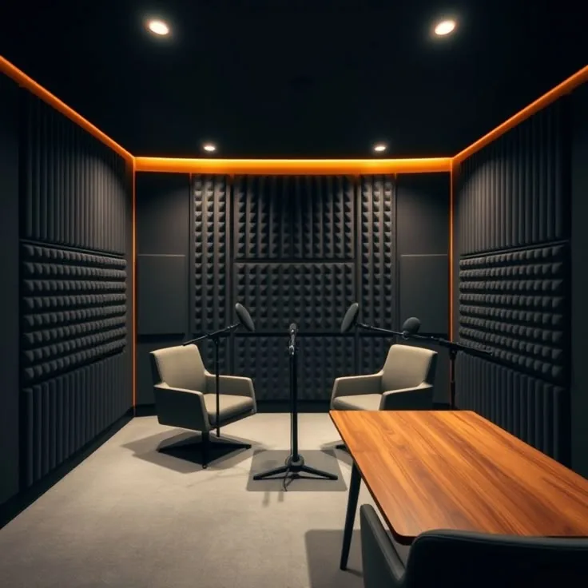
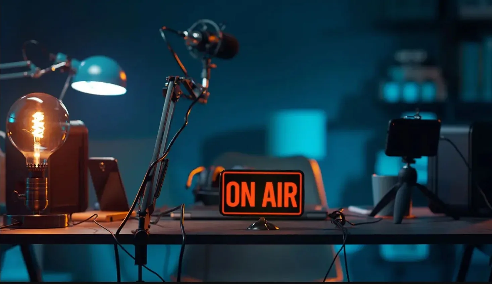

01
Podcast Shoot
Multi-camera podcast recording with professional audio, lighting and technical support.
Explore service →A focused studio for podcasts, creator videos, product shoots and post-production. Plan the session you need, then let the setup disappear into the background.

Choose only the production support you need—from recording space to editing and content repurposing.
Multi-camera podcast recording with professional audio, lighting and technical support.
Explore service →Talking-head videos, courses, reels and personal-brand content in a controlled studio setup.
Explore service →Product photos and videos for ads, e-commerce, websites and social campaigns.
Explore service →Long-form editing, multi-camera cuts, captions, colour correction and short-form repurposing.
Explore service →Audio cleanup, mastering, graphics, transitions and delivery-ready exports.
Explore service →Planning, scripts, show notes, social copy, clips and creative support for publishing consistently.
Explore service →
Walk in with an idea. Record with a professional setup. Leave with content ready for the next stage of production.
See how the studio can adapt to interview-led podcasts, solo content and product-focused shoots.

Interview-led and discussion formats with professional sound and multi-camera coverage.

Clean talking-head and creator setups for YouTube, courses, reels and personal brands.

Product photos and promotional video designed for digital campaigns and marketplaces.
Media is loaded only when requested to keep the initial page fast on mobile.
The shooting space, studio lighting, make-up/green room access, 300 Mbps Wi-Fi, air conditioning, electricity backup and a holding area are available. Exact equipment and setup depend on the booked service.
The podcast floor is approximately 16 ft wide × 12 ft high × 14 ft deep, with additional area for cameras and equipment.
Time 2 Talk is in Indirapuram, Ghaziabad, close to Shipra Mall, with restaurants and other amenities nearby.
Up to six participants can be accommodated on set along with a production crew, with a holding area for additional guests and assistants.
Yes. Professional microphones, cameras, lighting and related equipment are available, with technical assistance during the booking.
Yes. High-speed internet can support live-streaming workflows for platforms such as YouTube, Facebook and Zoom.
Use the booking form for your requirements or contact the studio directly on WhatsApp.